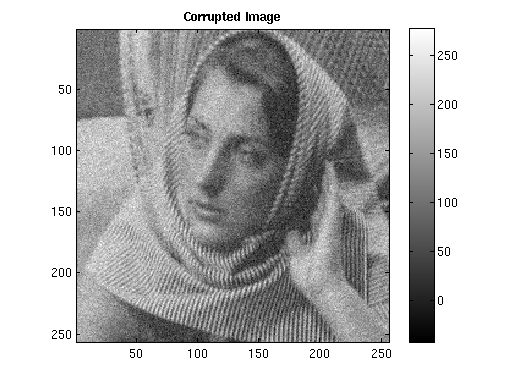
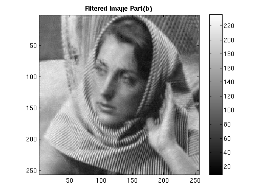

CS 663 : Digital Image Processing : Assignment 5
Question 1: Image Denoising using PCA
Contents
Part (a)
tic; num = 200; colorScale = [ (0:1/(num-1):1)' , (0:1/(num-1):1)' , (0:1/(num-1):1)' ]; imgInput = imread('../data/barbara256.png'); imgInput = double(imgInput); [rows, columns] = size(imgInput); sigma = 20; imgCorrupted = imgInput + randn(size(imgInput))*sigma; imgFiltered = myPCADenoising1(imgCorrupted, sigma); RMSD_in = sqrt(sum(sum((imgInput-imgCorrupted).^2))/(rows*columns)); RMSD = sqrt(sum(sum((imgInput-imgFiltered).^2))/(rows*columns)); save '../images/imgFiltered_part_a' imgFiltered; figure; imagesc(imgInput); colormap(colorScale); colormap gray; daspect ([2 2 2]);% axis tight; title('Input Image', 'FontWeight','bold'); colorbar; figure; imagesc(imgCorrupted); colormap(colorScale); colormap gray; daspect ([2 2 2]);% axis tight; title('Corrupted Image', 'FontWeight','bold'); colorbar; figure; imagesc(imgFiltered); colormap(colorScale); colormap gray; daspect ([2 2 2]);% axis tight; title('Filtered Image Part (a)', 'FontWeight','bold'); colorbar; fprintf('RMSD obtained for noisy image in part (a) is %f \n', RMSD_in); fprintf('RMSD obtained for denoised image in part (a) is %f \n', RMSD);
RMSD obtained for noisy image in part (a) is 20.057024 RMSD obtained for denoised image in part (a) is 9.888813
Part (b)
imgFiltered2 = myPCADenoising2(imgCorrupted, sigma); RMSD2 = sqrt(sum(sum((imgInput-imgFiltered2).^2))/(rows*columns)); save '../images/imgFiltered_part_b' imgFiltered2; figure; imagesc(imgInput); colormap(colorScale); colormap gray; daspect ([2 2 2]);% axis tight; title('Input Image', 'FontWeight','bold'); colorbar; figure; imagesc(imgCorrupted); colormap(colorScale); colormap gray; daspect ([2 2 2]);% axis tight; title('Corrupted Image', 'FontWeight','bold'); colorbar; figure; imagesc(imgFiltered2); colormap(colorScale); colormap gray; daspect ([2 2 2]);% axis tight; title('Filtered Image Part(b)', 'FontWeight','bold'); colorbar; fprintf('RMSD obtained for noisy image in part (b) is %f \n', RMSD_in); fprintf('RMSD obtained for denoised image in part (b) is %f \n', RMSD2);
RMSD obtained for noisy image in part (b) is 20.057024 RMSD obtained for denoised image in part (b) is 8.426587
Part (c)
[imgIn, imgN, imgOut, mask] = myBilateralFiltering(imgInput, 105, 1.6, 9.5); imgOut = double(imgOut); RMSD3 = sqrt(sum(sum((imgInput-imgOut).^2))/(rows*columns)); save '../images/imgFiltered_part_c' imgOut; fprintf('RMSD obtained for noisy image in part (c) is %f \n', RMSD_in); fprintf('RMSD obtained for denoised image in part (c) is %f \n', RMSD3); figure; imagesc(imgOut); colormap(colorScale); colormap gray; daspect ([2 2 2]);% axis tight; title('Filtered Image Part(c) (Bilateral Filter)', 'FontWeight','bold'); colorbar;
rmsd =
8.5746
RMSD obtained for noisy image in part (c) is 20.057024
RMSD obtained for denoised image in part (c) is 8.579446
Part (c): Comments
% We see that the result obtained using the Bilateral Filter is not as % good as the result from the PCA based denoising. The bilaterally filtered % image has a lot of grainy artifact present whereas the other one is % relatively a lot smoother. % % Also, part 2 results are better than part 1 results, as in part 2 % updation is done only on the basis of similar patches unlike all the % patches of the image as in part 1. % Bilateral filtering algorithm works best for noisy images with constant % regions. The algorithm itself is based on this assumption. The test image % being used here has many different color regions because of the sikn tone % and the shadows; and so denoising is not that effective. % % The main difference between the algorithm for PCA based approach and the % bilateral filter is: % In bilateral filtering, for a given pixel we assign weights for another % pixel based on the dissimilarity between intensities and spatial distance % between the pixels, it does not take into account any parameter of the % underlying noise. % Whereas in PCA based denoising we use the information of noise variance % to estimate the denoised coefficients. toc;
Elapsed time is 451.659833 seconds.